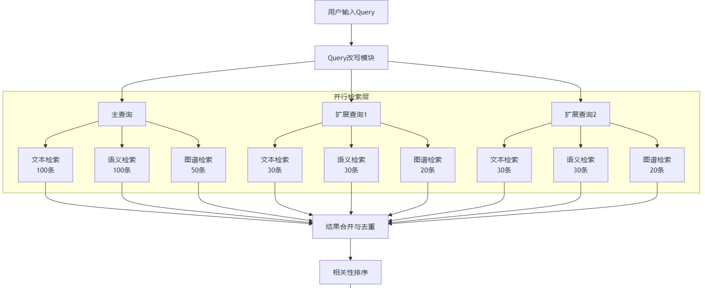
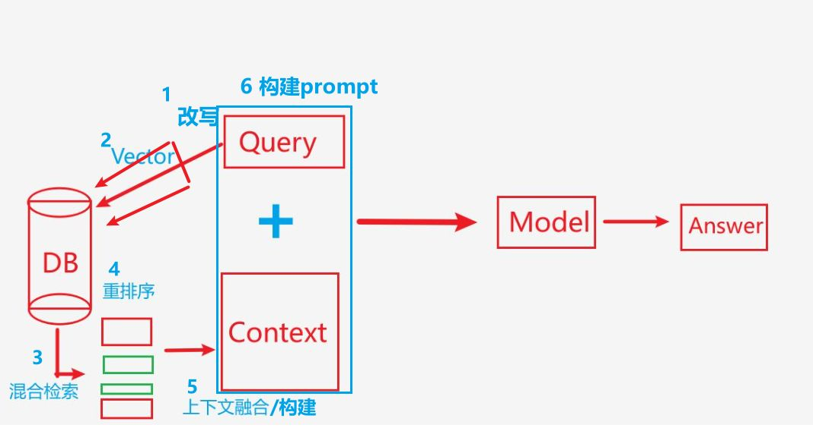

Tags: 导入Edge::2-21
查询改写主要目的是优化后续的什么以及精准的将用户的什么转换成更加适合什么的形式。
优化检索效果，通常需要快速、精准地将用户输入转换为更适合检索的查询形式
Tags: 导入Edge::2-21
用户输入：“最新房产税政策”
查询改写模块（小型7B Llama2）将其改写成什么？
“2025年最新商业地产税收政策有哪些变化？”
Tags: 导入Edge::2-21
优化用户输入，提高检索相关性。
Tags: 导入Edge::2-21
主流的 Query 改写方式，什么时候使用单一改写？什么时候使用多查询生成。
在简单场景下倾向于单一改写，
而在复杂或模糊场景下更倾向于多查询生成
Tags: 导入Edge::2-21
我的系统里面Query 改写方式，是进行单一改写还是生成多查询？以及他们的分别的检索后的返回文档的数量是多少？
【每种查询的每种检索的返回数量。】
我的策略是生成多查询，也就是一个主查询，再加上两个扩展查询。
其中主查询的话，经过文本，语义，图谱检索后的数量分别是100,100,50，而扩展查询经过三种检索之后，得到的数量是分别是30,30,20。
所以一个主查询再加两个扩展查询他们总体返回的文档的数量不超过500，大概在400多。
Tags: 导入Edge::2-21
我的系统里面Query 改写方式，将一个query改写成三个query，然后他们最终分别会检索出不同的结果，请问 将它们进行排序之前需要进行什么处理？
先进行去重处理。 因为很有可能检索到同样的内容。
Tags: 导入Edge::2-21
房地产培训系统查询Query 改写，提示词应该是什么样的？
【你是个什么？对什么改写，背景，这是一个什么？然后涵盖什么内容？改写要求是什么，返回的格式是什么？事例是什么？】
f"""你是一个专业的房地产培训系统查询专家。请对以下用户查询进行专业化改写。
背景：这是一个面向房地产公司内部员工的培训系统，涵盖法律法规、房产知识、销售技巧和话术等内容。
用户查询：{query}
请按照以下要求改写：
1. 返回1个主查询（最符合原意）和2个扩展查询（相关方向）
2. 使用房地产行业标准术语
3. 确保改写后的查询涵盖必要的上下文
4. 每个查询控制在20字以内
输出格式：
主查询：[主查询内容]
扩展查询1：[扩展查询1内容]
扩展查询2：[扩展查询2内容]
示例：
用户查询：'新人怎么卖房子'
主查询：'房地产销售新人入职培训要点'
扩展查询1：'房产销售基础话术技巧'
扩展查询2：'新手置业顾问客户开发方法'
"""
Tags: 导入Edge::2-21
房地产培训系统 最终回答生成，提示词应该是什么样的？
【角色，任务，背景，嵌入 ，要求，格式 】
f"""你是一个专业的房地产培训讲师。请基于提供的上下文信息，回答用户的问题。
背景：面向房地产公司内部员工的培训系统
问题：{query}
参考上下文：
{context}
回答要求：
1. 使用专业但易懂的语言
2. 结构清晰，分点说明
3. 适当添加实际案例
4. 如涉及法规政策，需注明来源
5. 如果是销售话术，请给出具体对话示例
输出格式：
[核心回答]
[补充说明（如有）]
[实际案例/对话示例（如适用）]
[相关提醒（如有）]
"""
Tags: 导入Edge::2-21
用户的问题会先经过大模型进行改写。为什么用大模型呢？
【实现的角度和维护的角度。】
因为大模型理解能力强，可以很好地理解用户意图，而且实现起来比规则基础的改写更简单，维护成本也更低。
Tags: 导入Edge::2-21
让大模型返回3个改写后的query，叫什么名字以及分别什么意思？
【紧扣什么，补充什么？】
- 1个主查询：这个是最核心的，紧扣用户原始意图
- 2个扩展查询：从不同角度补充相关信息
Tags: 导入Edge::2-21
RAG系统，比如用户问'怎么卖房子'，改写后的结果应该是什么？
- 主查询可能是'房地产销售技巧要点'
- 扩展查询可能是'房产销售基础技巧'和'新手置业顾问客户开发方法'
Tags: 导入Edge::2-21
RAG系统，query改写为什么要返回3个而不是更多呢？ 【三个查询能够很好的平衡什么和什么？】
如果是单一查询，那么查询的结果可能不够全面，
如果是太多的查询会导致查询过的无关结果，引入噪声，而且的话效率低下。
因为实践发现，3个查询能够很好地平衡检索的全面性和系统性能/效率。太多的查询反而会带来噪音，影响最终结果的质量。
Tags: 导入Edge::2-21
RAG系统，
改写后的query会串行还是并行地去做几种检索？
并行地去做三种检索，文本，语义和图谱检索。
Tags: 导入Edge::2-21
RAG系统，
改写后的query会并行地去做三种检索，分别是什么以及是什么作用？ 【什么匹配，什么度，以及在图谱里面找到相关的什么和什么。】
- 文本检索：找最基础的关键词匹配
- 语义检索：通过向量相似度找相关内容
- 图谱检索：通过知识图谱找到相关的知识节点和关系
Tags: 导入Edge::2-21
RAG系统，
文本检索 他的目的是什么？ 【进行什么匹配？】
找最基础的关键词匹配。
Tags: 导入Edge::2-21
RAG系统，
语义检索的目的是什么？ 【通过什么来找到相关内容？】
通过向量相似度找相关内容。
Tags: 导入Edge::2-21
RAG系统，
图谱检索的目的是什么？ 【通过图谱找到相关的什么和什么？】
通过知识图谱找到相关的知识节点和关系。
Tags: 导入Edge::2-21
RAG系统，
文本检索，语义检索，图谱检索这3种为什么是互补的？ 【什么性和什么性和什么化知识？】
- 文本检索确保准确性
- 语义检索提供相关性
- 图谱检索补充结构化知识
Tags: 导入Edge::2-21
对于房地产培训系统的Query改写，需要考虑哪三个方面？【用词呀，整体呀，包含呀。】
分别是专业性,结构化和完整性。
Tags: 导入Edge::2-21
对于房地产培训系统的Query改写，需要考虑专业性，结构化和完整性 三个方面，其中，专业性是什么意思？【将什么化表达转成什么用语？】
因为房地产行业有很多专业术语，我们需要把用户的口语化表达转成标准专业用语。
Tags: 导入Edge::2-21
对于房地产培训系统的Query改写，需要考虑专业性，结构化和完整性 三个方面，其中，结构化是什么意思？【将什么问题转换成什么样的查询？】
要把用户零散的问题转成更有条理的查询。比如用户问'合同有什么要注意的'，我们可以把它拆分为'销售合同关键条款'、'合同签订流程'、'风险防控要点'等具体方面。
Tags: 导入Edge::2-21
对于房地产培训系统的Query改写，需要考虑专业性，结构化和完整性 三个方面，其中，完整性是什么意思？【要考虑到什么和什么，适当的扩展查询的什么？把必要的信息都怎么样？】
因为培训系统要考虑到相关法规和公司制度，所以在改写时要适当扩展查询范围，把相关的必要信息都覆盖到。
Tags: 导入Edge::2-21
对于房地产培训系统的RAG，用户进行改写，然后进行检索，检索以后进入到重排，这整个流程的流程图是什么？ 【用户输入进入哪个模块，产生什么，分别是什么，然后进入什么样检索?】
将用户的输入进行改写模块，产生三个查询，分别是主查询和两个扩展查询。
每个查询同时进行三种方式的混合检索，文本检索，语义检索，图库检索。
最终这些所有检索到的内容进行去重。

Tags: 导入Edge::2-21
房地产培训系统查询Query 改写，提示词应该是什么样的？【应该包含哪些内容？】
角色，你是一个房地产公司查询系统专家。
任务，请帮我针对用户的输入来进行改写。
要求，返回一个主查询和两个扩展查询，主查询是贴合用户的核心需求，扩展查询的是扩展用户的意图。
返回格式，……
示例，……
Tags: 导入Edge::2-21
对于房地产培训系统的RAG，从用户输入问题开始到形成最终的prompt提示词，总体的过程是什么？ 【具体细节】
- 用户输入问题以后。 进入query改写模块后，会生成一个主查询和两个扩展查询。
- 查询经过嵌入模型向量化以后， 进行文本检索跟语义检索。 然后查询使用实体识别以后进行图谱检索。混合检索一共产生500条结果。 先对500条混合结果进行初步排序，选出top 200
- 然后是重排模块，粗排筛选出100条，精排筛选出10条。
- 对筛选到的10条内容进行上下文构建，采用了结构化的信息组织策略来构建上下文Context。
- 最后这个构建的结构化的context跟用户的原始输入query拼接到prompt模板中，形成最终的prompt提示词。
Tags: 导入Edge::2-21
对于房地产培训系统的RAG，
后续的需要进行的优化点有哪些？【混合检索以及上下文构建这两个阶段。 】
这混合检索里面，3种检索方式应该是可以动态的，比如事实类的查询，那么图谱检索的权重应该更大。对于观点类的问题，那么语义检索的权重应该更大。
利用检索到的内容进行上下文构建阶段，我们还会添加元信息标记，比如信息的时效性、可信度等，这些都会作为提示信息注入到最终的prompt中，帮助大模型生成更准确的回答。
Tags: 导入Edge::2-21
对于房地产培训系统的RAG，
排序里面的粗排考虑到哪些信息？【三方面】
- 内容的时效性（最新政策优先）
- 来源可靠性（官方信息优先）
- 内容完整性（完整流程优先）
Tags: 导入Edge::2-21
对于房地产培训系统的RAG，
精排和粗排这两个阶段，分别的重点是什么？
粗排的重点就是快速的过滤掉无关的噪音，
精排阶段的重点是进行复杂的相似度计算。
Tags: 导入Edge::2-21
对于房地产培训系统的RAG，
Milvus使用哪个索引？
HNSW。
Tags: 导入Edge::2-21
最大输入 token 数是否包含了生成输出的 token 数？
是的。
Tags: 导入Edge::2-21
为什么最大输入 token 数包含生成输出？
LLaMA 等语言模型是基于自回归机制工作的，这意味着它们会逐步生成每个 token，而每个新生成的 token 会被当作输入，加入到上下文中，供模型预测下一个 token。
Tags: 导入Edge::2-21
假设你的 prompt 是 1000 个 token，模型在生成第一个输出 token 时，它的输入是什么？
当第一个输出 token 被生成后，模型的输入变成了 1001 个 token，这是为什么呢？
是这 1000 个 token。
这个 token 会被加入到上下文中，成为新的输入的一部分。
Tags: 导入Edge::2-21
对于大模型来说，随着更多 token 被生成，输入上下文会怎么样变化？ 直到怎么样？
输入上下文会不断增长，直到达到最大上下文长度（如 2048）。
Tags: 导入Edge::2-21
为什么最大输入 token 数需要同时包括 prompt 和生成的内容。
生成的输出实际上是动态加入到模型的输入中的。
Tags: 导入Edge::2-21
上下文长度，即模型在一次推理中能够“记住”的所有内容（包括提示和生成）。
Tags: 导入Edge::2-21
即模型在一次推理中能够“记住”的所有内容（包括提示和生成）。
Tags: 导入Edge::2-21
最多只能生成 48 个 token，因为 prompt 和输出加起来不能超过 2048。
Tags: 导入Edge::2-21
“最大输入 token 数”
名字听起来像只针对“输入”，但实际上它指的是什么？
模型一次性处理的所有内容。
Tags: 导入Edge::2-21
最大输入 token 数包含 prompt 和生成输出，是因为什么？
模型需要将每一步生成的内容纳入上下文，以继续预测下一个 token。
Tags: 导入Edge::2-21
模型的上下文长度（即最大输入 token 数）包括了哪两个部分？
输入提示（prompt） 和 生成输出（completion） 的总和。
Tags: 导入Edge::2-21
LLaMA 1 和 LLaMA 2 他们分别的上下文窗口分别是多少？
LLaMA 1 ：2048
LLaMA 2：4096
Tags: 导入Edge::2-21
LLaMA 1 和 LLaMA 2 他们分别的嵌入维度分别是多少？
LLaMA 1
- 对于所有模型版本（7B、13B、33B 和 65B），Token 的嵌入维度为 4096.
LLaMA 2
Token 的嵌入维度根据模型大小有所不同：
- 7B 模型：嵌入维度为 4096.
- 65B 模型：嵌入维度为 8192.
Tags: 导入Edge::2-21
LLaMA 1 上下窗口是多大？以及嵌入维度是多少？
上下窗口: 2048,
嵌入维度: 4096.
Tags: 导入Edge::2-21
LLaMA 1 上下窗口是2048，如果上下文长度为 2048 tokens，建议将 prompt 控制在 多少作用？
1500-1800 tokens 左右。
Tags: 导入Edge::2-21
如果输入的 prompt 超过了上下文长度上限（例如超过 2048 tokens），模型通常会怎么样？这种行为可能导致什么问题?
自动截断超出的部分，只保留最后的 2048 tokens。
导致前面的重要信息丢失，因此需要注意输入内容的长度管理。
Tags: 导入Edge::2-21
模型能够一次性处理的最大的上下文长度。
Tags: 导入Edge::2-21
包括输入的提示（prompt）和生成的输出（completion）中的所有 token 总数。
Tags: 导入Edge::2-21
LLaMA 1
最大输入 token 数，隐藏维度，注意力头数，激活函数，分别是什么？
最大输入 token 数为 2048，隐藏维度是4096，注意力头数是32 个，激活函数是SwiGLU 。
Tags: 导入Edge::2-21
LLaMA 1
基于 Transformer 的自回归解码器架构，与 GPT 类似，但有以下改进，改进是什么？
Tags: 导入Edge::2-21
模型在生成文本时，是通过不断预测下一个token来完成的。每预测出一个新token，它就是否会被加入到上下文中？
会的。
Tags: 导入Edge::2-21
模型有最大的上下文的限制，比如说2048。检索到的十个文档，作为上下文拼接到模板构成提示prompt，而模型有上下文限制，会超出这个限制。 体来说，我们在实践中的做法应该是什么呢？
为系统提示词和查询预留固定空间，
如果我们期望生成500个tokens的回答，那么用于prompt的部分就不能超过1548个tokens。
Tags: 导入Edge::2-21
- 信息的去重和合并，然后根据余弦相似度将内容进行去重，再将互补的信息进行合并。
- 考虑到了模型的上下文窗口限制是2048，给prompt预留1000个token，对每条信息进行token计数，计算前N个信息的token总数，如果正好大于1000，那么只保留N-1条信息。
- 我们把精排得到的10条信息按照不同的维度进行分类，比如事实信息价格信息位置信息等。
Tags: 导入Edge::2-21
# 1. 分数归一化
# 2. 权重分配
# 3. 去重处理
# 4. 排序整合
Tags: 导入Edge::2-21
检索融合以及上下文构建这两个阶段他们的难点分别是什么？
检索融合：处理不同格式、不同分数体系，以及平衡他们的权重。
上下文构建：提取关键信息并合理组织。
Tags: 导入Edge::2-21
- Query改写，
- 向量嵌入，
- 混合检索，
- 重排序，
- 上下文构建。

Tags: 导入Edge::2-21
RAG这个项目的输入是什么？请输入开始解释一下接下来发生的过程。
输入是用户查询，就比如说最近的房产税是怎么样的？
它就会改写成2025年最新的商业房产税收是什么样的？这个作为主查询，还有两个相关的扩展查询。
然后这三个查询都会并行的经过混合检索，也就是同时进行文本，语义，图谱检索。
Tags: 导入Edge::2-21
RAG这个项目里面，
上下文构建模块和 答案生成模块，分别在输入和输出是什么？
- 上下文构建模块
- 输入:TOP 10排序结果
- 输出:结构化的上下文信息
- 答案生成模块
- 输入:原始查询 + 结构化上下文 构建成的prompt提示词
- 输出:生成的答案文本
Tags: 导入Edge::2-21
RAG这个项目里面，
混合检索模块以及混合检索模块，分别在输入和输出是什么？
- 混合检索模块
- 输入:改写后的查询，嵌入成向量表示
- 输出:从多个源检索到的候选结果(500条)
- 重排序模块
- 输入:500条候选结果
- 输出:经过粗排和精排后的TOP 10结果
Tags: 导入Edge::2-21
FastAPI vs Flask 对比，具体来说好在哪里？
- 性能比Flask更好
- 原生支持异步处理，特别适合RAG系统的长时间运算
- 并发处理能力更强
- FastAPI自带API文档（Swagger/ReDoc）
- 类型提示支持更好
Tags: 导入Edge::2-21
在实际项目中，FastAPI已经成为Python后端API开发的主流选择，特别是对于需要什么样的现代应用？
处理异步操作和高并发的现代应用。
Tags: 导入Edge::2-21
在实际RAG项目中，
构建context的时候构建什么样的context。
结构化context。
Tags: 导入Edge::2-21
在实际RAG项目中，
利用检索到的十条文档构建结构化的context ，提示词是什么？
请将以下检索结果整理成结构化的上下文信息：
1. 按主题分类组织信息
2. 使用要点符号列出关键信息
3. 保留信息来源
4. 去除重复信息
5. 按重要性排序
Tags: 导入Edge::2-21
在实际RAG项目中，
利用检索到的十条文档信息如下，
# 输入的检索结果示例
search_results = [
{
'content': 'ChatGPT发布4.0版本，推理能力提升50%',
'source': 'OpenAI博客',
'timestamp': '2024-03-01'
},
{
'content': '用户反馈新版本响应速度提升明显',
'source': '用户论坛',
'timestamp': '2024-03-02'
}
]
# 输出的结构化context 是什么样的？
# 输出的结构化context
structured_context = """
【技术更新】
• ChatGPT 4.0版本发布
• 推理能力提升50%
来源：OpenAI博客 (2024-03-01)
【用户反馈】
• 响应速度显著提升
• 用户体验改善
来源：用户论坛 (2024-03-02)
"""